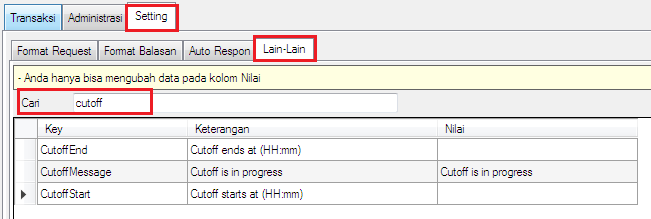
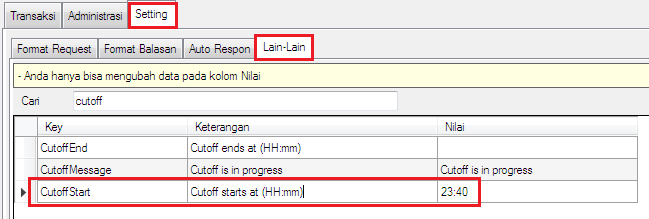
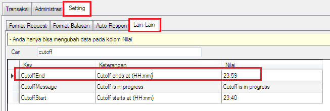
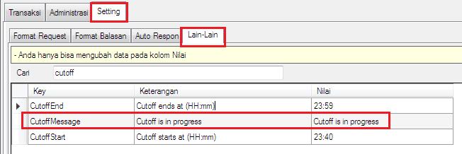

Cutoff
Rekap transaksi harian biasanya di server pulsa dilakukan kisaran waktu sebelum pergantian hari seperti jam 23:40 s/d 23:59 agar diketahui jualan di hari itu untung atau buntung. Saat proses rekap tersebut tentunya harus tidak ada transaksi apapun yang dilakukan oleh Reseller. Berangkat dari situ hadirlah fitur Cutoff untuk memenuhi kebutuhan tersebut di OtomaX v4.0.0 klik disini.
Cutoff berguna untuk menghentikan semua transaksi di rentang waktu tertentu secara otomatis. Untuk mengaturnya ikuti panduan berikut ini:
-
Masuk menu Setting -> Lain - lain -> pada box: Cari ketik: cutoff lalu klik tombol
Refresh, akan muncul tampilan pengaturan Cutoff:

-
Pada key: CutoffStart di kolom Nilai isi dengan jam dimana cutoff akan dimulai, misalnya diisi:
23:40.

-
Pada key: CutoffEnd di kolom Nilai isi dengan jam dimana cutoff akan berakhir, misalnya diisi:
23:59.

-
Pada key: CutoffMessage di kolom Nilai isi dengan pesan yang akan memberikan informasi bahwa
server sedang cutoff ke Reseller, misal diisi: Cutoff is in progress.

Pesan di kolom nilai ini akan mengisi parameter [keterangan] yang berada di Setting -> Format Balasan -> kolom Format.
- Tutup buka OtomaX.
- Pengaturan Cutoff selesai.
Tertarik dengan fitur Cutoff?... Anda dapat membeli OtomaX sekarang dengan klik disini.